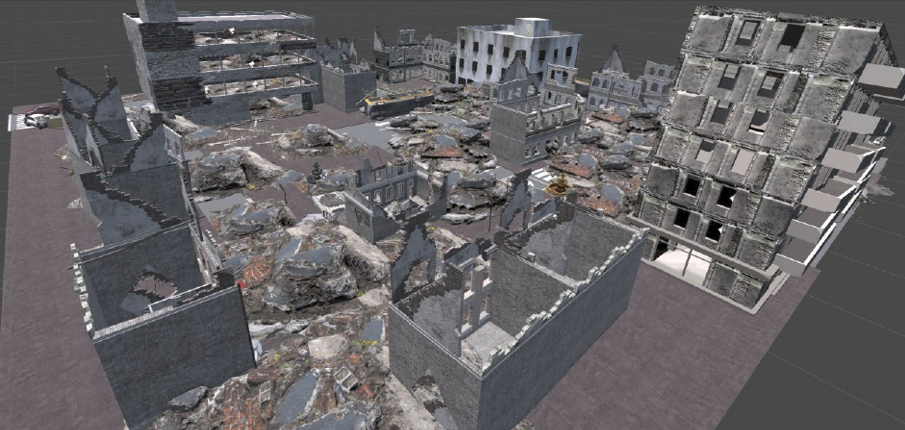
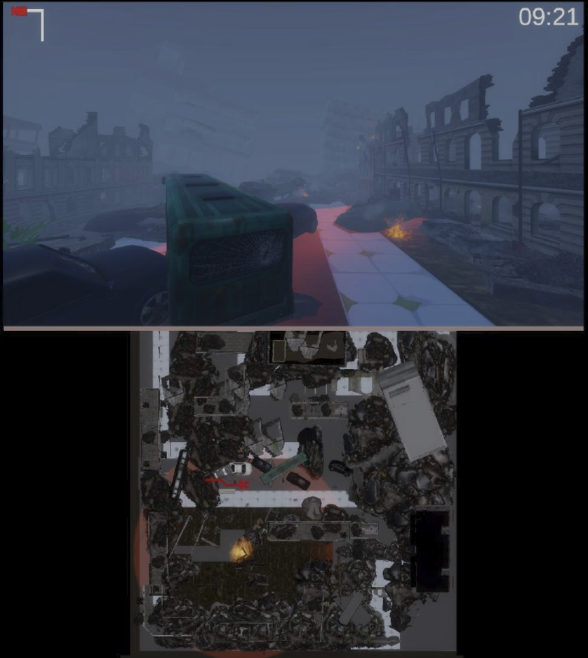
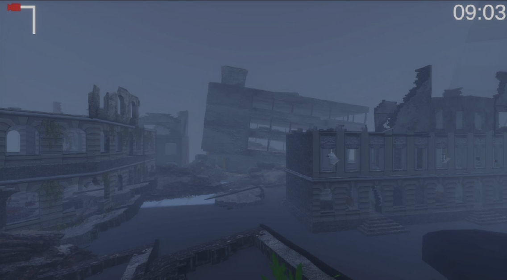
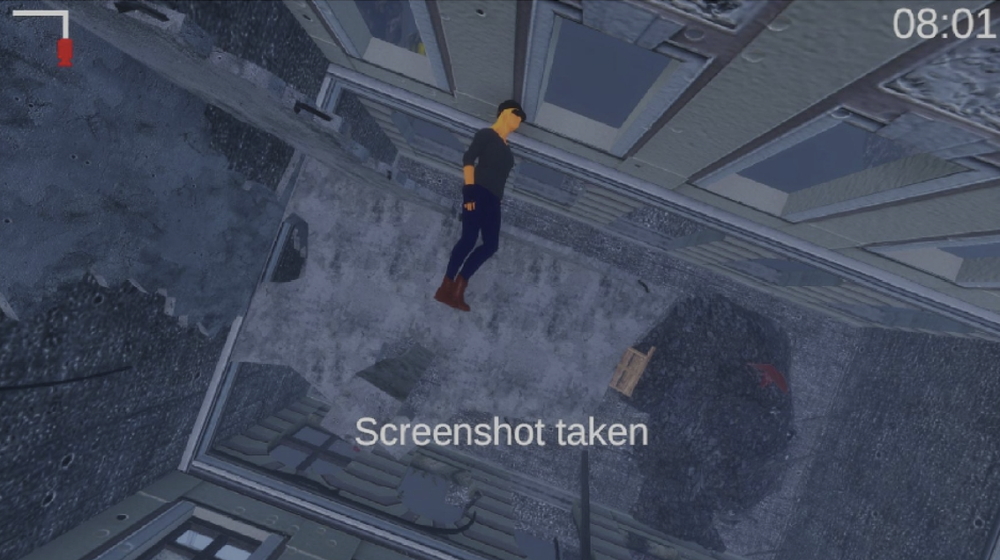
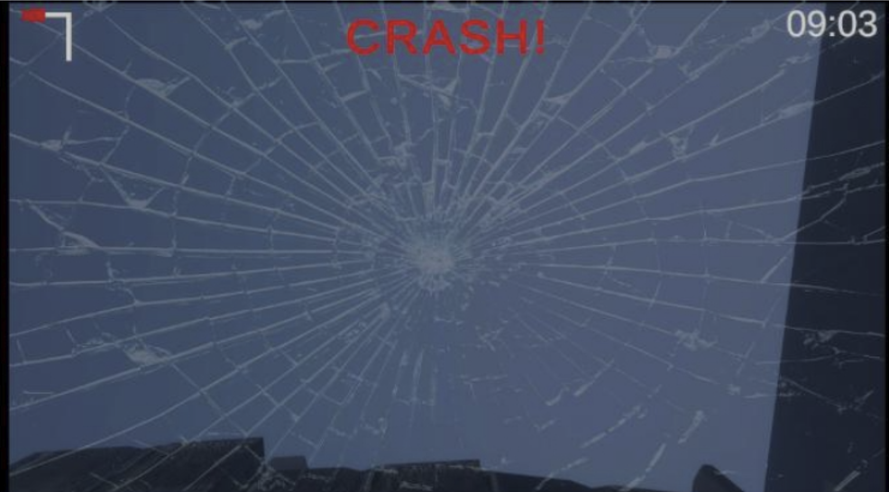
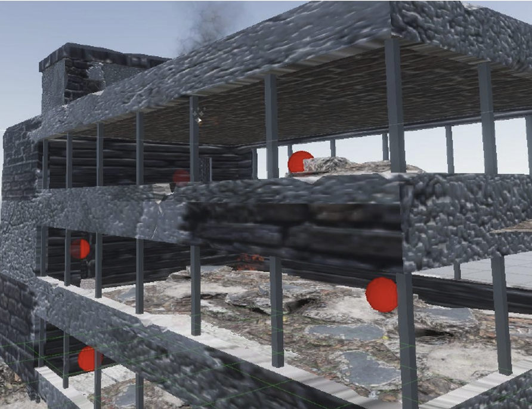
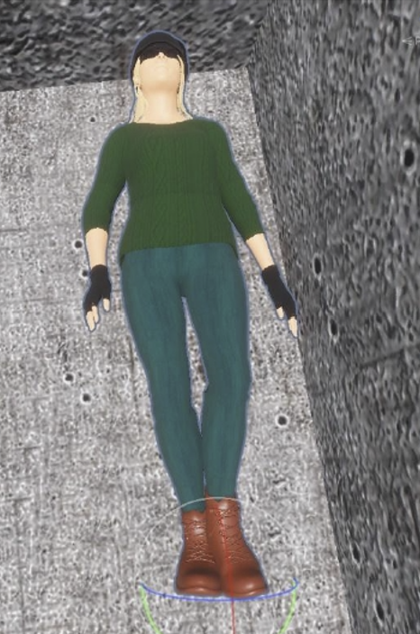
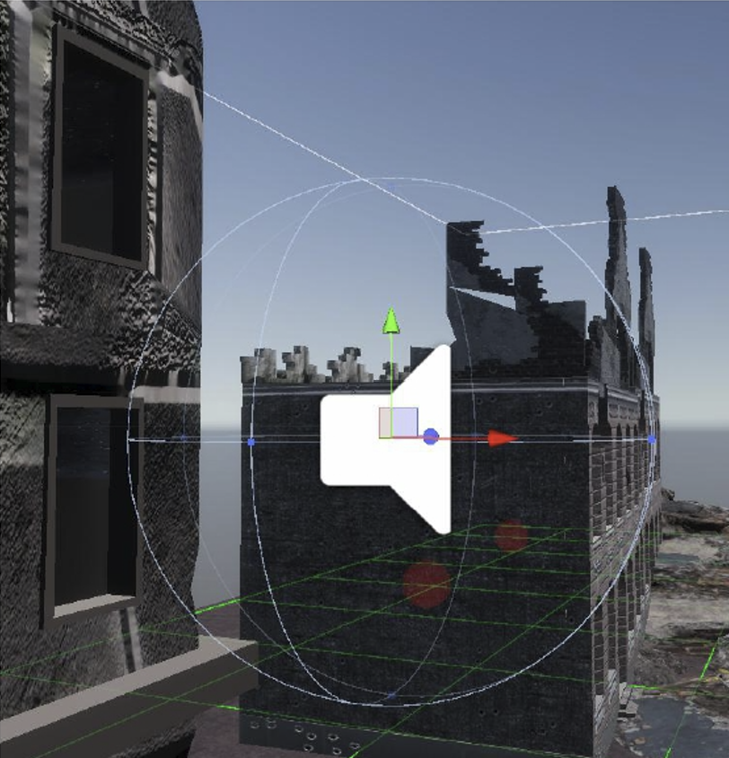

Simulateur de drone conçu pour l'entraînement au pilotage et la recherche de survivants en milieu post-catastrophe naturelle.

L'IPAL est un laboratoire de recherche franco-singapourien réunissant notamment le CNRS, la National University of Singapore et l'A*STAR. Basé à Singapour, ce laboratoire se concentre sur l'Intelligence Artificielle, l'Interaction Humain-Machine et la Réalité Virtuelle.
Ce projet s'inscrit dans le cadre de mon Master et a été réalisé en collaboration avec le laboratoire IPAL de Singapour. L'objectif principal était d'améliorer un simulateur de vol de drone développé initialement par le laboratoire.
Le simulateur vise à entraîner des pilotes de drone à la recherche de survivants dans un environnement urbain dévasté par une catastrophe naturelle. De plus, ce projet sert de plateforme de recherche pour étudier l'impact des interfaces utilisateur (IHM) sur la charge cognitive des pilotes dans des situations critiques.
L'utilisateur est immergé dans un scénario de sauvetage où il doit piloter un drone pour localiser des victimes dans un temps imparti. Le défi réside dans la navigation au sein d'un environnement dense et instable, où le moindre crash doit être évité.
Pour l'assister, le pilote dispose d'une interface graphique personnalisable lui permettant de moduler la quantité d'informations affichées, comme l'activation d'une carte indiquant les zones déjà explorées. Cette fonctionnalité est au cœur de l'étude sur la charge cognitive menée par l'IPAL.



Au cours de ce projet, j'ai été amené à développer plusieurs fonctionnalités clés pour améliorer le réalisme et l'utilité du simulateur :
J'ai remplacé le simple message texte "Crash" (utilisé lors du premier prototype) par un système physique réaliste : lors d'un impact avec l'environnement, le drone se crashe véritablement, interrompant son vol. Cela oblige le pilote à faire preuve d'une plus grande précision.

Initialement fixes, les positions des corps sont désormais générées aléatoirement à partir d'un système de points d'apparition. J'ai également implémenté une interface permettant de paramétrer le nombre de victimes à trouver par session, et j'ai varié les textures de leurs vêtements pour éviter la monotonie visuelle.


J'ai ajouté de nombreux détails aux habitations en ruines (meubles, débris, éléments de décor). Pour renforcer l'immersion, j'ai retravaillé l'environnement sonore en intégrant des sons 3D spatialisés (comme des sirènes d'alarme) et des événements aléatoires soudains (explosions lointaines).
